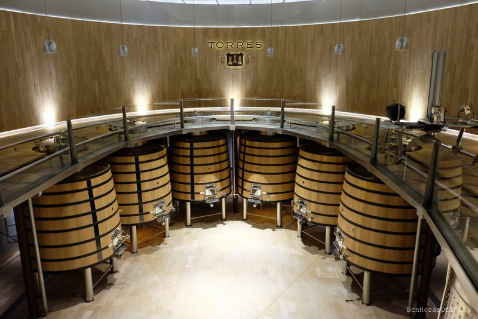
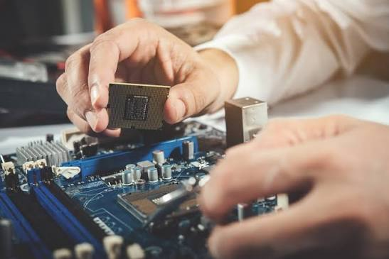

La meva experiencia:
- EOC Informatica (Tecnic de sistemes):He fet les practiques d'empresa del grau mitja i treball ordinari a EOC informatica on m'he treballat a la preparacio i reparacio de sistemes informatics
- Amphora (Mosso de Magatzem):Durant l'estiu pasat he reforçat torns durant els caps de semana fent picking i packing a um magatzem que col·labora amb diferents marques i entitats
- Familia Torrres (Operari de Bodega)Durant la verema de 2026 he trbenallat en el Moll de la bodega Torres, separant mitjançant maquinari el raim de la rapa

